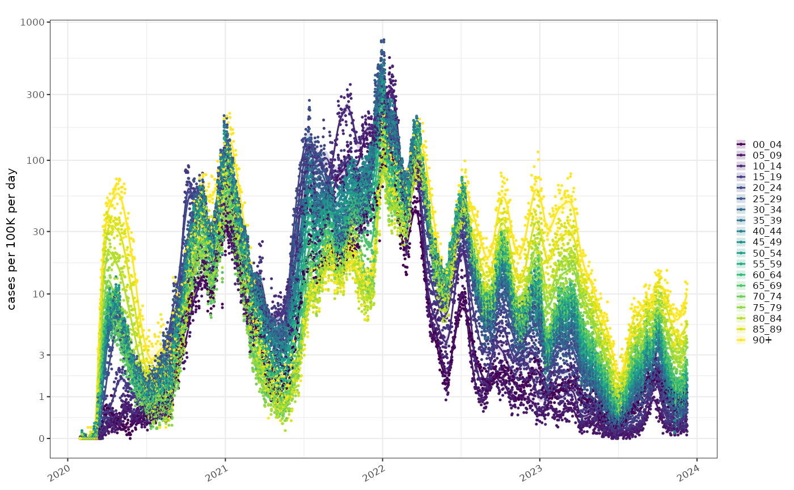
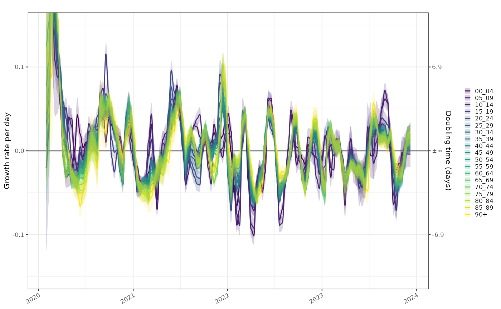
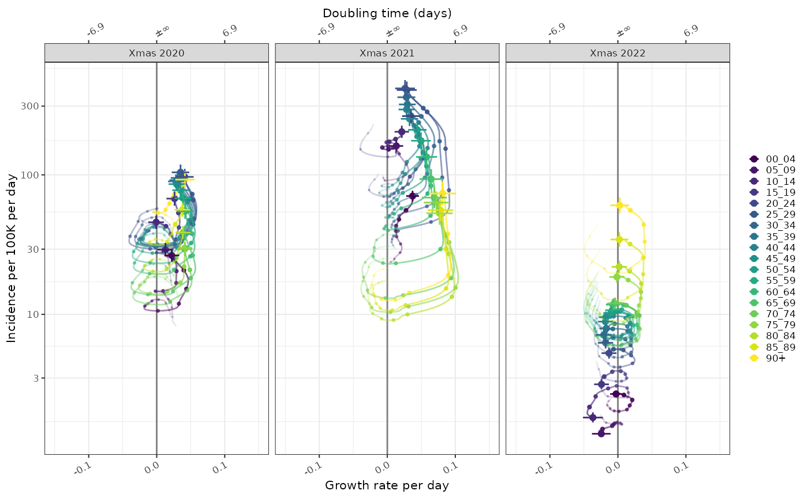
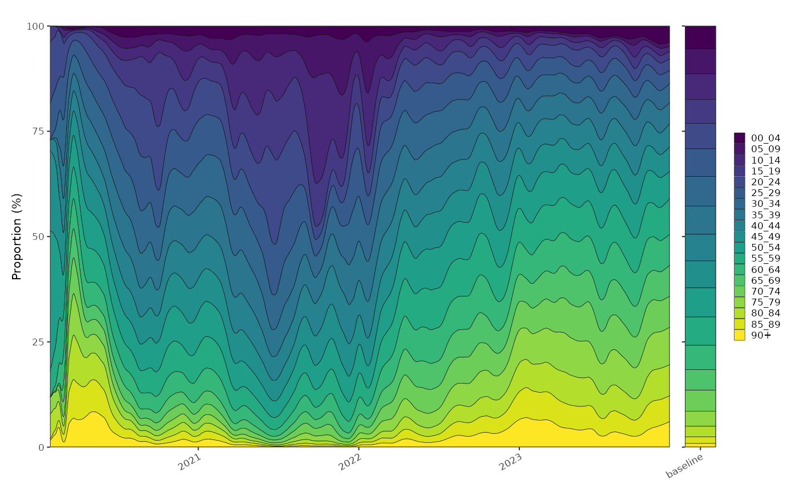
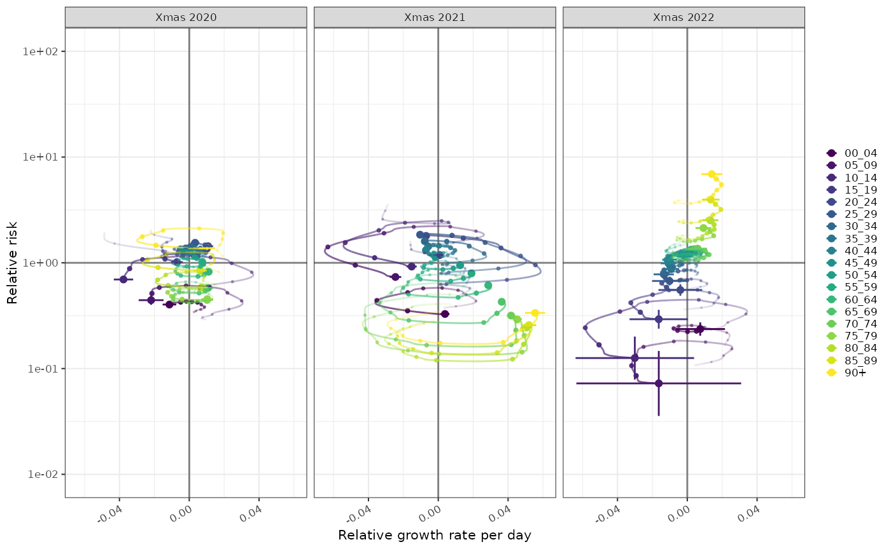
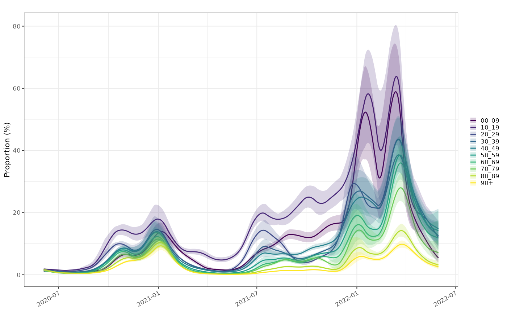
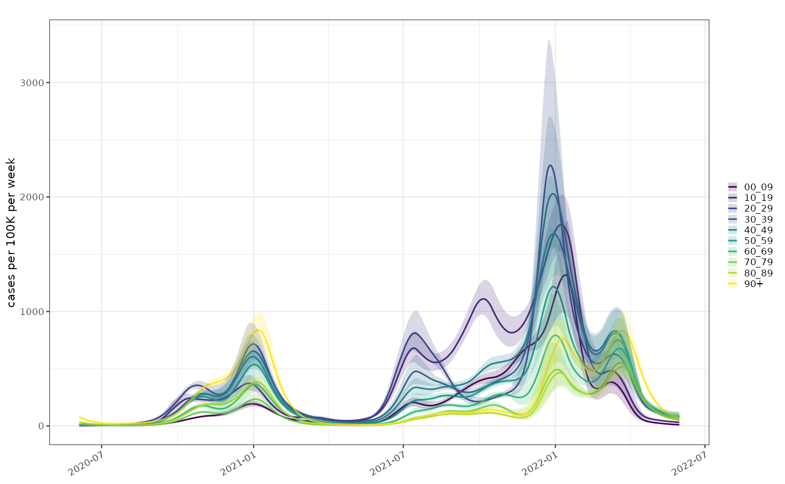

Comparisons between epidemic states in different populations separated by for example geography, or in this case age, requires a normalisation by the population size in either absolute or proportional terms. Based on the 2021 census we have some demo data for the demographics of England:
glimpse(england_demographics)
#> Rows: 19
#> Columns: 3
#> Groups: class [19]
#> $ class <fct> 00_04, 05_09, 10_14, 15_19, 20_24, 25_29, 30_34, 3…
#> $ population <dbl> 3077000, 3348600, 3413100, 3218900, 3414400, 37154…
#> $ baseline_proportion <dbl> 0.054470107, 0.059278063, 0.060419864, 0.056982069…Incidence Poisson rate model
A plot of the normalised incidence rates of COVID-19 by population size, shows initially the rate of COVID cases was highest in the elderly. By late 2020 this pattern had changed and rates were uniform accross age groups. In early 2021 as vaccination took hold and school testing was rolled out, younger age groups had higher rates of COVID positive tests, with a curious spike in the very young age groups around November 2021. In early 2022 the pattern reversed and the elderly again became the age group with the highest rates, and that pattern has persisted until the present.
tmp = growthrates::england_covid %>%
growthrates::poisson_locfit_model(window=21) %>%
growthrates::normalise_incidence(growthrates::england_demographics)
raw_pop = growthrates::england_covid %>% inner_join(england_demographics, by="class")
plot_incidence(tmp,raw = raw_pop, size=0.25)+scale_y_log1p(n=7)+
scale_colour_viridis_d(aesthetics = c("fill","colour"))
The use of test positives as a proxy for COVID incidence is clearlly potentially biased by testing (partilcularly in the first wave where testing was limited to those in hospital). A more reliable comparison in this situation would be a test positivie proportion, but unfortunately testing rates are not published broken down by age.
The exponential growth rate is already normalised by population size. Comparisons of the growth rate in these populations gives an idea of how tightly coupled they are. In most age groups the epidemic is growing and shrinking in sync apart from possibly the very young. COVID detections in this age group were not particularly reliable though and this would be easy to over-interpret.
plot_growth_rate(tmp)+
scale_fill_viridis_d(aesthetics = c("fill","colour"))+
coord_cartesian(ylim=c(-0.15,0.15))
#> Coordinate system already present. Adding new coordinate system, which will
#> replace the existing one.
The combination of growth and normalised incidence allows us to compare the epidemic state at different time points, in this case Christmas day in 2020, 2021 and 2022. This shows the same data as the previous graphs.
plot_growth_phase(tmp,
timepoints = as.Date(c("Xmas 2020"="2020-12-25","Xmas 2021"="2021-12-25","Xmas 2022"="2022-12-25")),
duration = 70,
interval = 7
)+
scale_colour_viridis_d()
Proportion model
There are two possible proportions models which woudl be of interest here. As mentioned about the proportion of positive tests in each age group would give us a clearer picture of whether the differences between age groups are down to differential testing, but unfortunately not available in this data set.
The second potential use is the distribution of ages in the test positive age group. This age distribution gives us some information about where the burden of disease is in the population but is also biased by test prioritisation.
A multinomial proportion shows similar patterns as the normalised incidence plot above:
tmp2 = growthrates::england_covid %>%
growthrates::proportion_locfit_model(window=21)
p1 = plot_multinomial(tmp2,normalise = TRUE)+
scale_fill_viridis_d()
p2 = ggplot(england_demographics)+
geom_bar(aes(x="baseline",y=population/sum(population)*100,fill=class), stat="identity", position="stack", colour="black", linewidth=0.1)+
scale_fill_viridis_d(guide="none")+
xlab(NULL)+
ylab(NULL)+
theme(axis.text.y = element_blank())+
ggplot2::coord_cartesian(expand=FALSE)
p1+p2+patchwork::plot_layout(nrow=1,widths = c(20,1),guides = "collect")
The age distribution of test positives can be normalised by the age distribution of the population. This give us a relative proportion of age groups in people testing positive versus expected in the population. This is conceptually a relative risk but of age group given COVID status
i.e. it is \(\frac{P(age = 80+|COVID+)}{P(age = 80+)}\)
At any point in time for a given population this quantity is centred around 1 and comparing it to growth rate gives us a possibly clearer picture of the trajectory of the relative distribution of COVID in the population. In Xmas 2021 although the majority of cases was in the young, relatively high growth in the elderly population meant that they were catching up, and from above we can see that by early 2022 the elderly had highest COVID positive rates. In 2022 however, the separation of the age groups was established and the trajectories were acting to preserve that separation.
tmp3 = tmp2 %>% normalise_proportion(england_demographics)
plot_growth_phase(tmp3,
timepoints = as.Date(c("Xmas 2020"="2020-12-25","Xmas 2021"="2021-12-25","Xmas 2022"="2022-12-25")),
duration = 70,
interval = 7
)+
scale_colour_viridis_d()
#> Coordinate system already present. Adding new coordinate system, which will
#> replace the existing one.
TODO:
Regional breakdown of testing effort and positivity by age group was published as part of test and trace. This had a by-age and by-region breakdown, until they shut down test and trace. https://www.gov.uk/government/publications/weekly-statistics-for-nhs-test-and-trace-england-2-to-15-june-2022 From this we could look at by age group proportion and incidence models and look into ascertainment bias in age groups.
prop = growthrates::england_covid_proportion %>%
growthrates::proportion_locfit_model(window=5)
plot_proportion(prop)+scale_fill_viridis_d(aesthetics = c("colour","fill"))
tmp_pop = growthrates::england_covid_proportion %>% select(class,population) %>% distinct()
pois = growthrates::england_covid_proportion %>%
growthrates::poisson_locfit_model(window=5) %>%
growthrates::normalise_incidence(tmp_pop)
plot_incidence(pois)+scale_fill_viridis_d(aesthetics = c("colour","fill"))